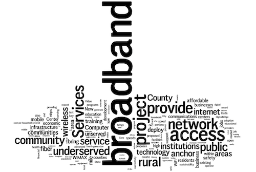
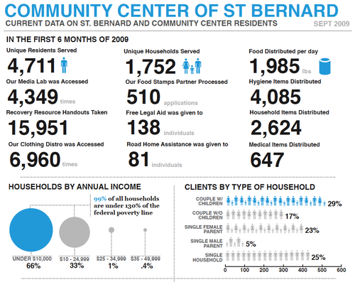

TEDActive
When:
February 9, 2010 - February 13, 2010
Where:
Palm Springs, CA TEDActive is designed for the curious, creative, passionate – for those who want to go beyond just watching TEDTalks to sharing experiences and participating in projects that might impact the world beyond. TEDActive provides a platform for energetic people to self-organize groups, to connect with each other and to start rewarding conversations around common interests. It’s a model that, in 2008 and 2009, generated powerful friendships and important collaborations that are still continuing today.
Washington Nonprofit Conference
When:
January 28, 2010 - January 29, 2010
Where:
Washington DC The art of fundraising is changing rapidly – new methods of communicating and engaging with donors are rapidly increasing. Email, social media, blogging, digital media, mobile and more are quickly becoming credible means of marketing to donors and prospects. But with various groups of constituents engaging through multiple channels, how does one integrate them all so that a consistent message across all channels is delivered?
State Of The Net
When:
January 27, 2010
Where:
Washington DC
Website:
http://www.netcaucus.org/conference/ The State of the Net Conference is the largest information technology policy conference in the US, attracting over 550 attendees in 2009. The conference framed the policy debates facing the new Administration and the new Congress. The State of the Net Conference is the only tech policy conference routinely recognized for its balanced blend of academics, consumer groups, industry and government (over 50% of 2009 attendees were government policy staff).
Re-Imagining News & Community in the Pacific Northwest
When:
January 7, 2010 - January 10, 2010
Where:
Seattle, WA The DIGITAL AGE and a depressed economy have changed the landscape in which journalism operates. Engage others who are actively involved in addressing the vital question of how the press and community members can help each other define and embrace our evolving Pacific NW news ecology. Our Seattle program “catalysts” - Norman Rice, Tracy Record, and Chris Jordan - will be part of the conversation joining other Pacific NW journalists, civic voices, broadcasters, educators, ethnic media, students, emergent voices, digital entrepreneurs and business people.
Organizing 2.0
When:
December 5, 2009
Where:
Murphy Institute for Worker Education and Labor Studies, New York City
Website:
http://organizing20.org/ Is online organizing really ‘organizing’? That’s a challenging question for those of us from a labor or community organizing background. That said, online organizing has received a lot of positive attention recently in connection with the presidential elections. What does this mean for our organizations? What skills do we need to share to make the most of no-longer-new online tools for our campaigns in New York?
Registration is now open. Tickets are $15.
Registration on the day of the event will be $20.
Organizing 2.0 is a grassroots led conference of social justice organizers primarily from labor and the community organizing world. Participants range from those new to online organizing as well as experienced professionals.
National Conference on Volunteering and Service, 2010
When:
June 28, 2010 - June 30, 2010
Where:
New York City The National Conference on Volunteering and Service is the world’s largest gathering of volunteer and service leaders from the nonprofit, government, and corporate sectors. Convened by Points of Light Institute and the Corporation for National and Community Service, the annual event provides attendees with an opportunity to learn, connect and shape the future of service and volunteering through a wide range of sessions, workshops, special events, service projects, panels, and special dialogues. More than 4,000 attendees are expected to attend the 2010 conference, June 28-30 in New York City.
NTIA Broadband Proposal Application Data Spreadsheet

BroadbandUSA.gov offers a searchable database of BTOP and BIP applications that have been made for broadband funding as part of the American Recovery and Reinvestment Act of 2009. But if spreadsheets are more your speed, you can download one below (sorted by date):
| Attachment | Size |
|---|---|
| BroadbandUSA_Apps_11-10-09.xls | 1.31 MB |
| BroadbandUSA_Apps_11-30-09.xls | 1.43 MB |
| BroadbandUSA_Apps_1-27-10.xls | 1.85 MB |
| BroadbandUSA_Apps_2-1-10.xls | 1.85 MB |
| BroadbandUSA_Apps_2-22-10.xls | 1.84 MB |
| BroadbandUSA_Apps_3-7-10.xls | 1.89 MB |
| BroadbandUSA_Apps_7-6-10.xls.zip | 778.56 KB |
| BroadbandUSA_Apps_9-20-10.xls.zip | 790.67 KB |
| BroadbandUSA_Apps_1-28-11.xls.zip | 792.16 KB |
Telling compelling stories with Data

I am blown away by the data visualizations created by VISTA Billy Brown serving at the Community Center of St. Bernard. The image above is part of a data report that his supervisor found so compelling she took it to a funder.
As a grantwriter, I have to balance storytelling with data. Usually, this means mixing anecdotes with statistics: a quote here, a pie chart there. What comes out is compelling but disjointed.
By creating a beautiful, accessible, yet information rich series of charts and visuals, this graphic tells a powerful story with data.
A picture can tell a 1000 words; it can also tell a 1000 numbers…. and amazingly have them make sense.
The Message is in the Music: Hip Hop Feminism, Riot Grrrl, Latina Music, and More
When:
March 5, 2010 - March 6, 2010
Where:
Bronxville, NY Twelfth Annual Women’s History Month Conference
at Sarah Lawrence College
Bronxville, New York
Friday & Saturday, March 5 & 6, 2010
Keynote speaker: Carmen Ashhurst, former president of Def Jam Recordings and Rush Communications, and author of the forthcoming book, Selling My Brothers: The Movement, The Media and Me
Music has long served social movements as a sound track, as a means of communication, and as its own arena for activism. While multiple generations of feminists have used music in these ways, it has played especially vital roles for those born since the 1970s. This conference will explore the ways in which young feminists have defined and expressed politics through music and musical cultures and communities. Among the questions we will ponder are: How does music reflect sites of agreement and conflict among different groups of feminists? How have movements like Riot Grrrl and Hip Hop feminism attracted young women to feminist activism? How do young feminists’ uses of music compare with those of earlier generations?
We invite activists, scholars and artists in all fields to propose papers, panels, workshops, performances, and exhibits.
Specific topics may include, but are not limited to
* Hip Hop Feminism
* Feminism in Latin Music
* Body Politics in the Music Industry
* Feminist Messages in World Music
* Young Feminists’ Musical Icons
* Women-owned Record Labels
* Zines in Feminist Culture
* The Riot Grrrl Movement Lesbian Music
* The Politics of Race in Feminist Music
* Misogyny in Contemporary Music
* Feminist Music Festivals
* Women in Music Videos
* Feminist Songwriters
* Legacies of Women in Blues, Jazz, Rock, and Folk
Grassroots Use of Technology Conference
When:
October 16, 2009 - October 17, 2009
Where:
Boston, MA
Website:
http://www.GrassrootsTech.org Have you ever wanted to get your organization online right away with a website or blog? Did you ever wonder how Facebook or Twitter can be made useful for your outreach? How about using free and easy tech tools to schedule meetings, conference online or over the telephone?
What about those “webinars” and other tools to train your members? How about using online surveys to collect feedback or make decisions? And what about working with members across several different languages?
If any of these questions apply to you, the Grassroots Use of Technology Conference (http://www.GrassrootsTech.org) is for you!
Bring your laptop to the workshops and we’ll help you jumpstart your online presence before you leave!
$75 - Registration (includes breakfast and lunch on Saturday, Oct. 17th)
$35 - Low income, student, or unemployed rate (A limited number of scholarships are available, see website for details.
Here’s what’s going on:
The 10th Annual Grassroots Use of Technology Conference (GUT-C X)
takes place in just under 4 weeks! - http://www.GrassrootsTech.org -
GUT-C X brings together hundreds of grassroots and social change organizers with media activists, writers, and techies from all over New England.
This year, we have an array of workshops that focus on social media and organizing work –geared towards both beginners and experts. Topics branch out into: creating websites, building rapid response networks, using databases and e-mail lists, fundraising and “micro” donations, community art, virtual worlds, and more. Rather than offering a blind “techno-lust,” the conference engages in levelheaded thinking about using the latest technologies towards the strategic objectives of an organization for both problem solving and
empowerment.
Organized in tandem with the National Writers Union’s Digital Media Conference, it will feature programming that looks at the implications of digital tech for content creation. GUT-C X is looking forward to a diverse turnout from immigrants, communities of color, labor organizations, and peace movement groups and will also act as a platform for regional work on the Detroit 2010 US Social Forum! Conference highlights will include a keynote address, “Connecting the Disconnected,” by Professor Richard O’Bryant (Northeastern University) and a lunchtime dialogue between techies and organizers coordinated by smartMEME.
The primary conference organizers are the Organizers’ Collaborative, the John O’Bryant African American Institute, Boston Neighborhood Network TV, the National Writers Union, and Massachusetts Global Action.